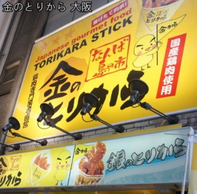
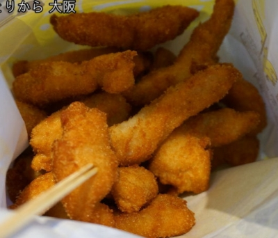

示意圖
金のとりから なんば 千日前店 [官網]
營業時間：11:00~22:00
日本國產雞肉專門業者開設

金のとりから 金炸雞 (雞柳條, 小份量就滿多的)

醬料
オリジナルスパイス 原味香辣料 人氣No.1
マヨネーズ 蛋黃醬
スイートチリソース 甜辣醬
レモン 檸檬
モンゴルの岩塩 蒙古岩鹽
チョコレートソース 巧克力醬
カレー 咖哩 (関東限定)
バーベキューソース 烤肉醬 (関西限定)
柚子ポン酢 柚子醬橙子 (関西限定)
うめドレッシング 梅花敷料
ハニーマスタードソース 蜂蜜芥末醬
レッドペッパー 辣椒

銀のとりから 銀炸雞 (炸雞皮, 冷的!?)

たこ焼道楽 わなか 千日前 本店 [官網]
營業時間：10:00~23:00

右邊巷子進去後有座位(共2層樓), 入口處如下

おおいり (可吃到4種口味) 8顆500

點餐時會問要不要美奶滋